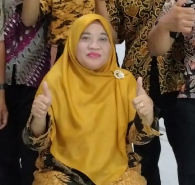
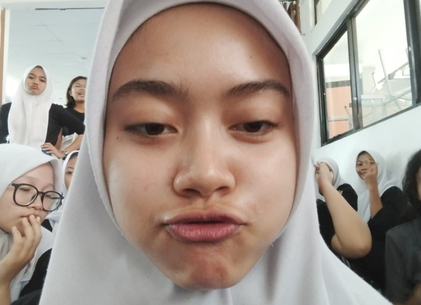
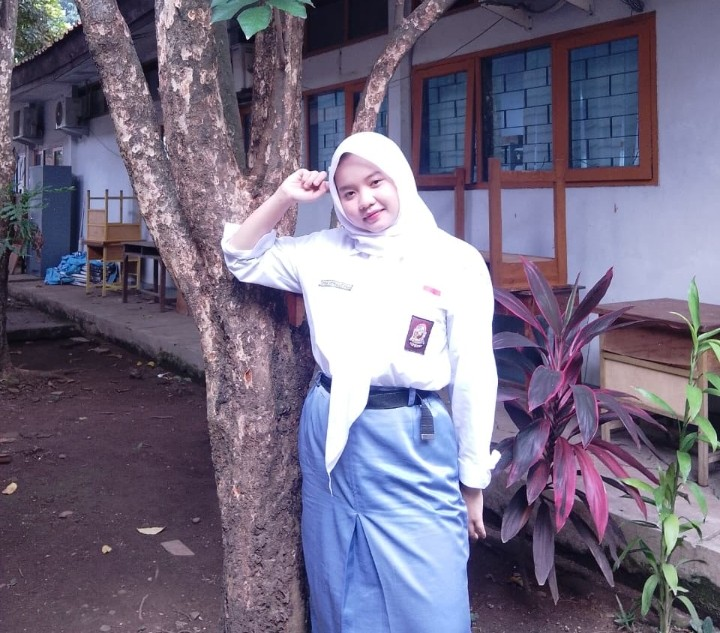
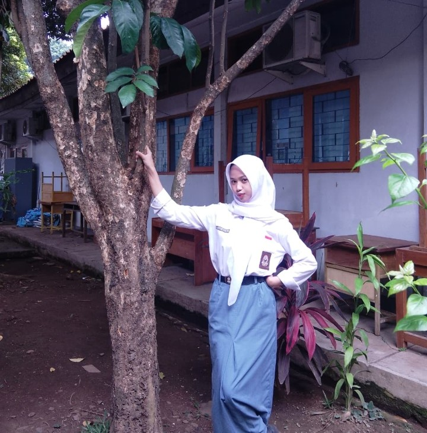
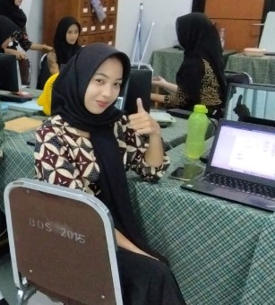

Struktur Organisasi Kelas XII MP 2

Wali Kelas
Bu Muiyah, S.Pd
Ketua Kelas
Muhammad Nur Jamil

Wakil Ketua Kelas
Araya Hestyanjani

Sekretaris 1
Sekar Fatmalatifah

Sekretaris 2
Purnaya Anggita Ajeng

Bendahara 1
Nazwa Safitri

Bendahara 2
Maura Virginia Alwer
Temukan Kami di Instagram
@mptwonestKlik di atas untuk mengunjungi profil kami!